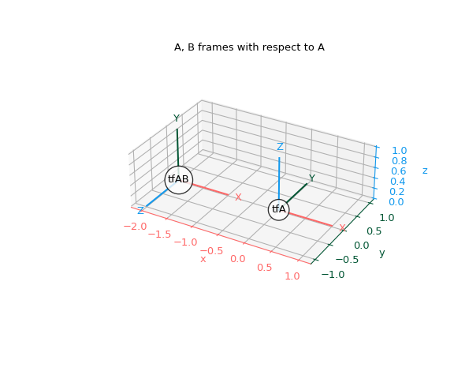
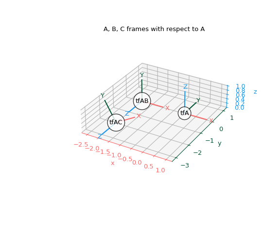
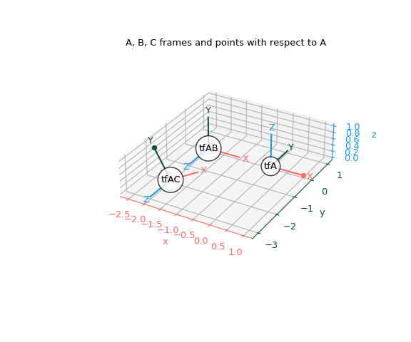
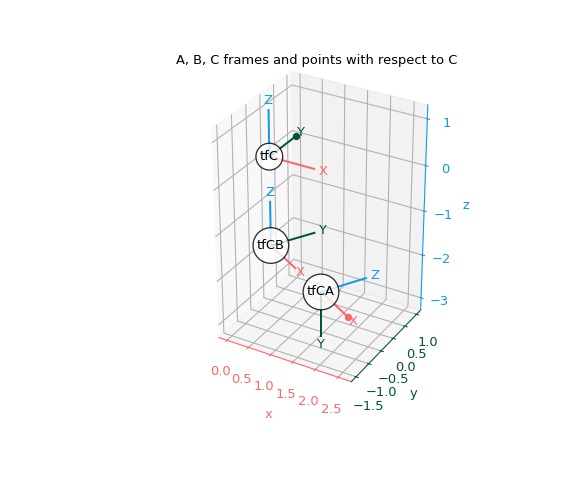

RigidTransform#
- class scipy.spatial.transform.RigidTransform(matrix, normalize=True, copy=True)[source]#
Rigid transform in 3 dimensions.
This class provides an interface to initialize from and represent rigid transforms (rotation and translation) in 3D space. In different fields, this type of transform may be referred to as “pose” (especially in robotics), “extrinsic parameters”, or the “model matrix” (especially in computer graphics), but the core concept is the same: a rotation and translation describing the orientation of one 3D coordinate frame relative to another. Mathematically, these transforms belong to the Special Euclidean group SE(3), which encodes rotation (SO(3)) plus translation.
The following operations on rigid transforms are supported:
Application on vectors
Transformation composition
Transformation inversion
Transformation indexing
Note that coordinate systems must be right-handed. Because of this, this class more precisely represents proper rigid transformations in SE(3) rather than rigid transforms in E(3) more generally [1].
Indexing within a transform is supported since multiple transforms can be stored within a single
RigidTransforminstance.Multiple transforms can be stored in a single
RigidTransformobject, which can be initialized using N-dimensional arrays and supports broadcasting for all operations.To create
RigidTransformobjects usefrom_...methods (see examples below).RigidTransform(...)is not supposed to be instantiated directly.For rigorous introductions to rigid transforms, see [2], [3], and [4].
- Parameters:
- matrixarray_like, shape (…, 4, 4)
A single transformation matrix or a stack of transformation matrices.
- normalizebool, optional
If True, orthonormalize the rotation matrix using singular value decomposition. If False, the rotation matrix is not checked for orthogonality or right-handedness.
- copybool, optional
If True, copy the input matrix. If False, a reference to the input matrix is used. If normalize is True, the input matrix is always copied regardless of the value of copy.
- Attributes:
singleWhether this instance represents a single transform.
rotationReturn the rotation component of the transform.
translationReturn the translation component of the transform.
Methods
__len__()Return the length of the leading transform dimension.
__getitem__(indexer)Extract transform(s) at given index(es) from this object.
__mul__(other)Compose this transform with the other.
__pow__(n)Compose this transform with itself n times.
from_matrix(matrix)Initialize from a 4x4 transformation matrix.
from_rotation(rotation)Initialize from a rotation, without a translation.
from_translation(translation)Initialize from a translation numpy array, without a rotation.
from_components(translation, rotation)Initialize a rigid transform from translation and rotation components.
from_exp_coords(exp_coords)Initialize from exponential coordinates of transform.
from_dual_quat(dual_quat, *[, scalar_first])Initialize from a unit dual quaternion.
Return a copy of the matrix representation of the transform.
Return the translation and rotation components of the transform, where the rotation is applied first, followed by the translation.
Return the exponential coordinates of the transform.
as_dual_quat(*[, scalar_first])Return the dual quaternion representation of the transform.
concatenate(transforms)Concatenate a sequence of
RigidTransformobjects into a single object.mean([weights, axis])Get the mean of the transforms.
apply(vector[, inverse])Apply the transform to a vector.
inv()Invert this transform.
identity([num, shape])Initialize an identity transform.
Notes
Added in version 1.16.0.
Array API Standard Support
RigidTransformhas support for Python Array API Standard compatible backends in addition to NumPy. The following combinations of backend and device (or other capability) are supported.Library
CPU
GPU
NumPy
✅
n/a
CuPy
n/a
✅
PyTorch
✅
✅
JAX
✅
✅
Dask
⛔
n/a
The method
applyis not supported with cupy<14.*.See Support for the array API standard for more information.
References
[3][4]Kevin M. Lynch and Frank C. Park, “Modern Robotics: Mechanics, Planning, and Control” Chapter 3.3, 2017, Cambridge University Press. https://hades.mech.northwestern.edu/images/2/25/MR-v2.pdf#page=107.31
[5]Paul Furgale, “Representing Robot Pose: The good, the bad, and the ugly”, June 9, 2014. https://rpg.ifi.uzh.ch/docs/teaching/2024/FurgaleTutorial.pdf
Examples
A
RigidTransforminstance can be initialized in any of the above formats and converted to any of the others. The underlying object is independent of the representation used for initialization.Notation Conventions and Composition
The notation here largely follows the convention defined in [5]. When we name transforms, we read the subscripts from right to left. So
tf_A_Brepresents a transform A <- B and can be interpreted as:the coordinates and orientation of B relative to A
the transformation of points from B to A
the pose of B described in A’s coordinate system
tf_A_B ^ ^ | | | --- from B | ----- to A
When composing transforms, the order is important. Transforms are not commutative, so in general
tf_A_B * tf_B_Cis not the same astf_B_C * tf_A_B. Transforms are composed and applied to vectors right-to-left. So(tf_A_B * tf_B_C).apply(p_C)is the same astf_A_B.apply(tf_B_C.apply(p_C)).When composed, transforms should be ordered such that the multiplication operator is surrounded by a single frame, so the frame “cancels out” and the outside frames are left. In the example below, B cancels out and the outside frames A and C are left. Or to put it another way, A <- C is the same as A <- B <- C.
----------- B cancels out | | v v tf_A_C = tf_A_B * tf_B_C ^ ^ | | ------------ to A, from C are left
When we notate vectors, we write the subscript of the frame that the vector is defined in. So
p_Bmeans the pointpdefined in frame B. To transform this point from frame B to coordinates in frame A, we apply the transformtf_A_Bto the vector, lining things up such that the notated B frames are next to each other and “cancel out”.------------ B cancels out | | v v p_A = tf_A_B.apply(p_B) ^ | -------------- A is left
Visualization
>>> from scipy.spatial.transform import RigidTransform as Tf >>> from scipy.spatial.transform import Rotation as R >>> import numpy as np
The following function can be used to plot transforms with Matplotlib by showing how they transform the standard x, y, z coordinate axes:
>>> import matplotlib.pyplot as plt >>> colors = ("#FF6666", "#005533", "#1199EE") # Colorblind-safe RGB >>> def plot_transformed_axes(ax, tf, name=None, scale=1): ... r = tf.rotation ... t = tf.translation ... loc = np.array([t, t]) ... for i, (axis, c) in enumerate(zip((ax.xaxis, ax.yaxis, ax.zaxis), ... colors)): ... axlabel = axis.axis_name ... axis.set_label_text(axlabel) ... axis.label.set_color(c) ... axis.line.set_color(c) ... axis.set_tick_params(colors=c) ... line = np.zeros((2, 3)) ... line[1, i] = scale ... line_rot = r.apply(line) ... line_plot = line_rot + loc ... ax.plot(line_plot[:, 0], line_plot[:, 1], line_plot[:, 2], c) ... text_loc = line[1]*1.2 ... text_loc_rot = r.apply(text_loc) ... text_plot = text_loc_rot + t ... ax.text(*text_plot, axlabel.upper(), color=c, ... va="center", ha="center") ... ax.text(*tf.translation, name, color="k", va="center", ha="center", ... bbox={"fc": "w", "alpha": 0.8, "boxstyle": "circle"})
Defining Frames
Let’s work through an example.
First, define the “world frame” A, also called the “base frame”. All frames are the identity transform from their own perspective.
>>> tf_A = Tf.identity()
We will visualize a new frame B in A’s coordinate system. So we need to define the transform that converts coordinates from frame B to frame A (A <- B).
Physically, let’s imagine constructing B from A by:
Rotating A by +90 degrees around its x-axis.
Translating the rotated frame 2 units in A’s -x direction.
From A’s perspective, B is at [-2, 0, 0] and rotated +90 degrees about the x-axis, which is exactly the transform A <- B.
>>> t_A_B = np.array([-2, 0, 0]) >>> r_A_B = R.from_euler('xyz', [90, 0, 0], degrees=True) >>> tf_A_B = Tf.from_components(t_A_B, r_A_B)
Let’s plot these frames.
>>> fig, ax = plt.subplots(subplot_kw={"projection": "3d"}) >>> plot_transformed_axes(ax, tf_A, name="tfA") # A plotted in A >>> plot_transformed_axes(ax, tf_A_B, name="tfAB") # B plotted in A >>> ax.set_title("A, B frames with respect to A") >>> ax.set_aspect("equal") >>> ax.figure.set_size_inches(6, 5) >>> plt.show()

Now let’s visualize a new frame C in B’s coordinate system. Let’s imagine constructing C from B by:
Translating B by 2 units in its +z direction.
Rotating B by +30 degrees around its z-axis.
>>> t_B_C = np.array([0, 0, 2]) >>> r_B_C = R.from_euler('xyz', [0, 0, 30], degrees=True) >>> tf_B_C = Tf.from_components(t_B_C, r_B_C)
In order to plot these frames from a consistent perspective, we need to calculate the transform between A and C. Note that we do not make this transform directly, but instead compose intermediate transforms that let us get from C to A:
>>> tf_A_C = tf_A_B * tf_B_C # A <- B <- C
Now we can plot these three frames from A’s perspective.
>>> fig, ax = plt.subplots(subplot_kw={"projection": "3d"}) >>> plot_transformed_axes(ax, tf_A, name="tfA") # A plotted in A >>> plot_transformed_axes(ax, tf_A_B, name="tfAB") # B plotted in A >>> plot_transformed_axes(ax, tf_A_C, name="tfAC") # C plotted in A >>> ax.set_title("A, B, C frames with respect to A") >>> ax.set_aspect("equal") >>> ax.figure.set_size_inches(6, 5) >>> plt.show()

Transforming Vectors
Let’s transform a vector from A, to B and C. To do this, we will first invert the transforms we already have from B and C, to A.
>>> tf_B_A = tf_A_B.inv() # B <- A >>> tf_C_A = tf_A_C.inv() # C <- A
Now we can define a point in A and use the above transforms to get its coordinates in B and C:
>>> p1_A = np.array([1, 0, 0]) # +1 in x_A direction >>> p1_B = tf_B_A.apply(p1_A) >>> p1_C = tf_C_A.apply(p1_A) >>> print(p1_A) # Original point 1 in A [1 0 0] >>> print(p1_B) # Point 1 in B [3. 0. 0.] >>> print(p1_C) # Point 1 in C [ 2.59807621 -1.5 -2. ]
We can also do the reverse. We define a point in C and transform it to A:
>>> p2_C = np.array([0, 1, 0]) # +1 in y_C direction >>> p2_A = tf_A_C.apply(p2_C) >>> print(p2_C) # Original point 2 in C [0 1 0] >>> print(p2_A) # Point 2 in A [-2.5 -2. 0.8660254]
Plot the frames with respect to A again, but also plot these two points:
>>> fig, ax = plt.subplots(subplot_kw={"projection": "3d"}) >>> plot_transformed_axes(ax, tf_A, name="tfA") # A plotted in A >>> plot_transformed_axes(ax, tf_A_B, name="tfAB") # B plotted in A >>> plot_transformed_axes(ax, tf_A_C, name="tfAC") # C plotted in A >>> ax.scatter(p1_A[0], p1_A[1], p1_A[2], color=colors[0]) # +1 x_A >>> ax.scatter(p2_A[0], p2_A[1], p2_A[2], color=colors[1]) # +1 y_C >>> ax.set_title("A, B, C frames and points with respect to A") >>> ax.set_aspect("equal") >>> ax.figure.set_size_inches(6, 5) >>> plt.show()

Switching Base Frames
Up to this point, we have been visualizing frames from A’s perspective. Let’s use the transforms we defined to visualize the frames from C’s perspective.
Now C is the “base frame” or “world frame”. All frames are the identity transform from their own perspective.
>>> tf_C = Tf.identity()
We’ve already defined the transform C <- A, and can obtain C <- B by inverting the existing transform B <- C.
>>> tf_C_B = tf_B_C.inv() # C <- B
This lets us plot everything from C’s perspective:
>>> fig, ax = plt.subplots(subplot_kw={"projection": "3d"}) >>> plot_transformed_axes(ax, tf_C, name="tfC") # C plotted in C >>> plot_transformed_axes(ax, tf_C_B, name="tfCB") # B plotted in C >>> plot_transformed_axes(ax, tf_C_A, name="tfCA") # A plotted in C >>> ax.scatter(p1_C[0], p1_C[1], p1_C[2], color=colors[0]) >>> ax.scatter(p2_C[0], p2_C[1], p2_C[2], color=colors[1]) >>> ax.set_title("A, B, C frames and points with respect to C") >>> ax.set_aspect("equal") >>> ax.figure.set_size_inches(6, 5) >>> plt.show()
